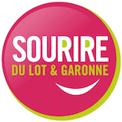
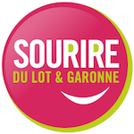

Local Services:
- Order groceries online in advance of your stay:
- Super U (Lavardac, 15 minutes towards Bordeaux)
- Drive Intermarché - Animal inn of Pradet (Calignac, 10 minutes away from Pehillo)
- Activ Taxis (Taxi Service in Nerac)
- CITRAM/Tideo Bus (Bus Service to/from Agen)
- Véloland Nérac (Rent bikes in Nérac - delivery available)
- Cycle Southwest (Rent bikes in Buzet - delivery available)
Partnership Discounts & Offers:
- Buzet Winery: 10% off (Buzet-sur-Baïse)
- Gagnet Farm: Wine Tasting (Mézin)
- Foie Gras Museum: 1 free ticket per family (Frespech)
- Crêperie "L'Aubade": 10% off or free meal off the kids menu (Agen)
- Prune Museum: 20% off (Lafitte sur Lot)
- Fleurons de Lomagne: Store selling local products, 5% off (Condom)
- House of Hazelnuts: Buy 1 admission ticket, get 1 free (Lacépède)
- Domaine les Bertins: Vineyards, 10% discount (Saint-Astier)
- Vineyards of Brulhois: Wine tasting and 1 free bottle (Layrac)
- The Delights of Saint-Cirice: store selling local delicacies, 10% discount (Monplaisir)
- Educational Discovery Farm: Free admission (Brugnac)
- Villascopia:: Archeological site and museum, 1€ off admission (Castelculier)
More Local Delicacies:
- Charcuterie from Albret
- At David's
- At Talenton
- Marie's Cheese
- Les Flots Blanc
- Castle Frandat
- Hall Castle
- Domaine de Heugarède Fruit Market
- Les Contes D'Albret
- The Art of Living - Restaurant and Wine Bar
- L'Escadron Volant Restaurant
- Crêperie L'Air du Temps
- Moulin des Saveurs Restaurant
- Le Jardin de la Baïse Restaurant
- Le Vigneron Restaurant
- Danival Organic Products
- Biocoop Organic Products
- La Vie de Claire
Great Places to Explore by Foot:
- Terra Aventure
- Hiking in the Lot-et-Garonne
- ItiAQUI: App with recommended hiking trails in the region
Villages ranked amongst the most beautiful in France:
Activities and Events:
- Agenda in Albret
- Sortir 47
- Calendar with events in the region
- The Castle of Henry IV
- Cruise of Prince Henry in Nerac
- Café Bar Restaurant "at the Concert"
- Albret Tourist Train
- Cap Cauderoue
- Tourism in Condom
- The Liège Museum
- The Bee & Honey Museum
- The Thermal Baths of Casteljaloux
- Walibi Park at the Passage d'Agen - buy your ticket at a discounted rate at Pehillo
- Aqualand
- The Garden of Water Lilies
- Grotto of Lastournelle
- Gascogne Navigation
- Beaurang Castle in Saint-Emilion